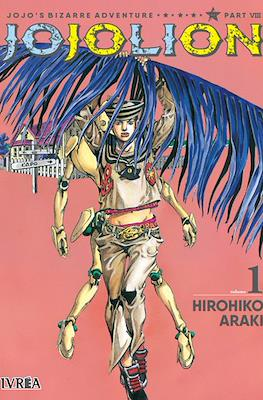

Opening
GO BEYOND ! (echo por los fanes ya que no existe uno oficial)
Portada
Manga
Historia del manga
JoJo’s Bizarre Adventure Parte 8, titulada JoJolion, se publicó como manga entre 2011 y 2021. La historia se sitúa en la ciudad ficticia de Morioh, en un universo alternativo al de la Parte 4, y sigue a Josuke Higashikata, un joven con amnesia y un misterioso Stand llamado Soft & Wet, que puede robar atributos o “burbujas” de otras personas y objetos. Josuke busca descubrir su verdadera identidad mientras se enfrenta a enemigos que buscan aprovechar el poder del Fruta del Árbol de la Locura y resolver los secretos de la familia Higashikata, incluyendo las extrañas deformaciones de los miembros de la familia y la conexión con la misteriosa fruta que otorga poderes especiales.
El manga de JoJolion continúa el enfoque de Hirohiko Araki en los Stands estratégicos y creativos, con un fuerte énfasis en la exploración de la identidad, la familia y la corrupción moral. La narrativa combina misterio, drama y elementos sobrenaturales, con un estilo más psicológico que las partes anteriores.